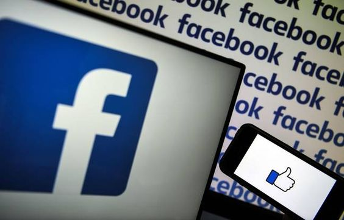
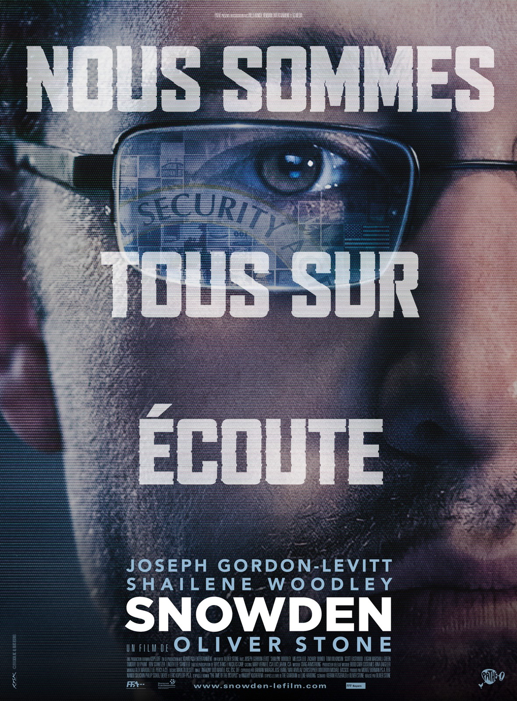

La création de Facebook
Pour que Facebook puisse devenir ce qu’il est aujourd’hui, Mark Zuckerberg a su développer un outil de connexion offrant à l’utilisateur une nouvelle vie sociale totalement virtuelle. La création de Facebook, c’était plus qu’une révolution.
Facebook d'aujourd'hui
Facebook est tout simplement le réseau social le plus puissant sur le Web. Sa présence parmi les géants du Web GAFAM, fait de lui le réseau le plus influent et le plus imposant. Facebook a su s’étendre partout dans le monde. Son influence est telle que le nombre d’utilisateurs correspond au tiers de la population mondiale actuelle. En effet, ce réseau possède actuellement 2,7 milliards d’utilisateurs et comptabilise plus d’un milliard de connexions par jour.
Aujourd’hui, tout le monde à déjà entendu une fois parler de lui. Ce réseau permet de partager, de publier et d’échanger ce que l’on veut à une communauté d’amis dans le but d’entretenir une vie sociale virtuelle. A ses débuts, ce réseau fut présenté comme une révolution. Mais comment Facebook a réussi à s’érigé parmi les plus grands ?
Un film retraçant les origines de Facebook
Pendant quelques années, la majeur partie de la population ne savait pas comment fut crée Facebook. Mais en 2010, toutes les questions concernant la création de ce réseau ont pu être résolues. En effet, The Social Network, film réalisé par David Finscher et sorti dans les salles en 2010, retrace la vie et le parcours du jeune milliardaire Mark Zuckerberg. En effet, c’est cet homme qui est à l’origine de Facebook. Ce film fut acclamé par la critique. Je vais maintenant vous raconter en détails l’histoire de Facebook.
La biographie d'un homme culte
Tout commença, dans le début des années 2000. Mark était étudiant dans la prestigieuse université d’Harvard. Un avenir radieux lui tendait les bras. En effet, Mark fut un enfant surdoué tout au long de sa scolarité. Malheureusement, alors qu’il n’avait que 19 ans, Mark connu une grande déception amoureuse avec sa rupture avec sa petite amie de l’époque.
Le soir même, alors qu’il était en plein trouble, Mark Zuckerberg décide de passer le temps en hackant les systèmes informatiques de l’université dans le but de récupérer les données de chaque étudiant. Une idée lui vient alors en tête. Et si il était possible de programmer un site recueillant chacune des photos de profils des étudiants dans le but de les comparer ? Il programma alors le site en une nuit : Facemash était né. Il est l’ancêtre de Facebook. Le succès du site fut néanmoins inattendu, tellement que la situation du jeune homme lui échappait. Il décida malheureusement de fermer le site.
Un an plus tard, Mark développa un nouveau site : The Facebook. A ses débuts, le site connaît un certain succès et fonctionne de la même manière qu’aujourd’hui. Néanmoins, Mark fut accusé d’avoir volé les idées du site des jumeaux Winklevoss : ConnectU. En effet, à l’époque, le jeune homme travaillait avec les jumeaux en tant que programmeur. Les jumeaux furent néanmoins dédommagés par une somme s’élevant à 65 millions de dollars.
Grâce au succès croissant et fulgurant de Facebook, Mark Zuckerberg, à l’âge de 21 ans, devient PDG de sa propre entreprise destinée à un brillant avenir.
L'ascension jusqu'au sommet
Même si la société Facebook a connu des débuts difficiles, ce réseau a su s’ériger parmi les grands du Web et est devenu aujourd’hui ce que l’on connaît de lui. Mark Zuckerberg a offert un outil de connexion incroyable permettant la création d’une toute nouvelle vie sociale complètement virtuelle.
Galerie
Voici une liste de films et de séries corrélés à « The Social Network »
- 